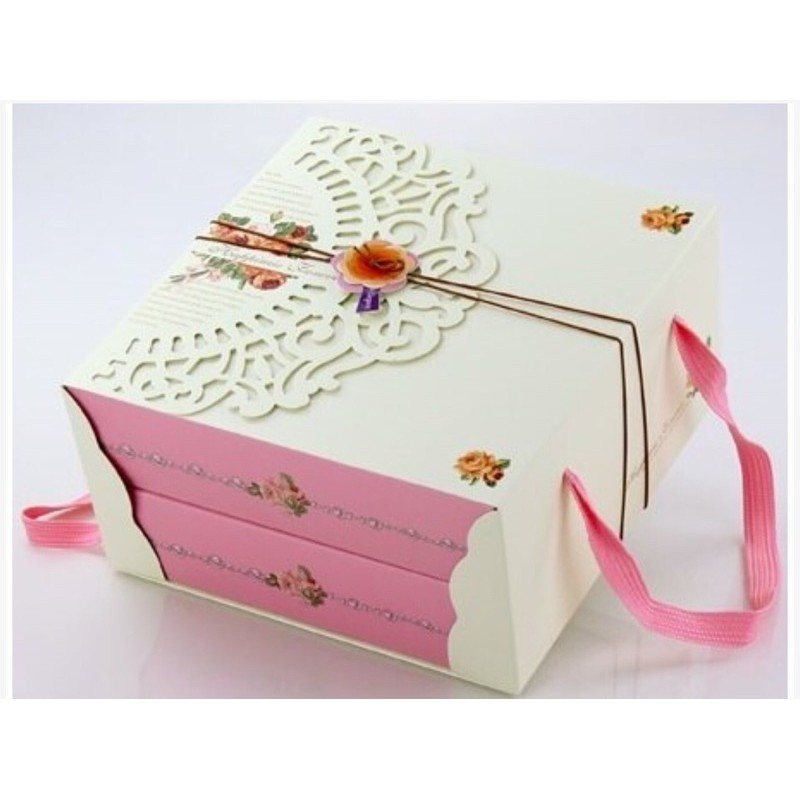
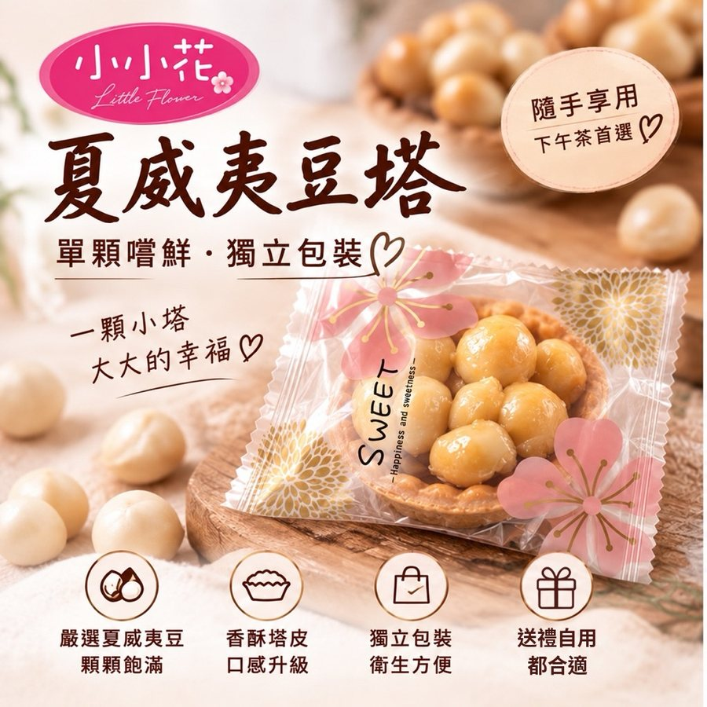
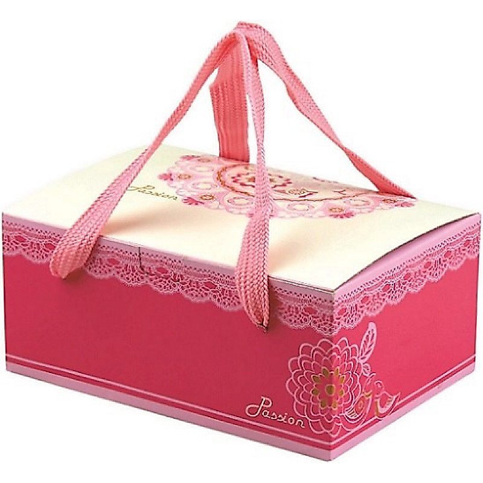
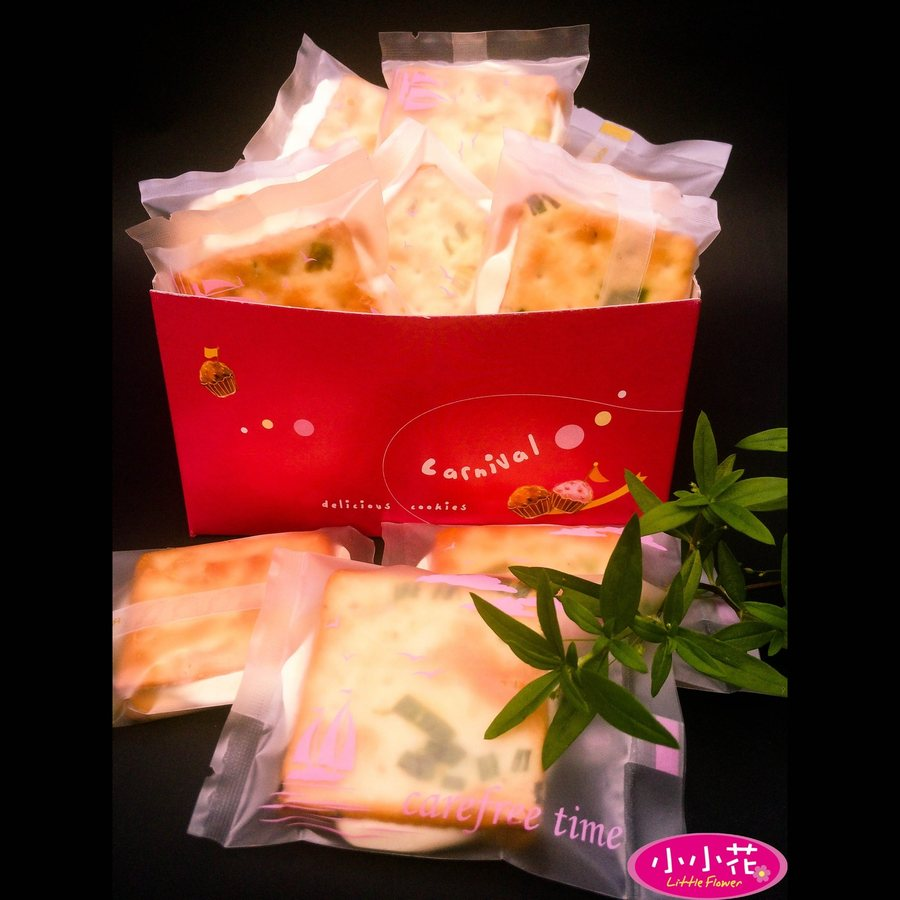

跳到主要內容
小小花手工烘焙坊
選單
今日出爐
送禮指南
烘焙日誌
關於小小花
常見問題
蝦皮選購
烘焙日誌
送禮、團購、保存，烤箱旁邊想到的事，寫下來給你參考。

過年伴手禮怎麼準備？年節送禮的預購時程與份量
過年前大家都在搶訂，手工點心產量有限。整理年節送禮要提早多久訂、送長輩和送客戶各挑什麼、份量怎麼抓。

手工餅乾、豆塔怎麼保存？收到後這樣放最好吃
手工點心沒有大量添加防腐，放法對了才會一直酥脆。整理收到後的擺放位置、開封後怎麼收、哪些地方不要放。

台中伴手禮怎麼挑？依送禮對象選對點心
送長輩、送同事、送客戶，適合的伴手禮不一樣。整理挑選時可以看的四件事：對象、份量、包裝、保存。

辦公室團購點心怎麼訂才不手忙腳亂
團購點心最怕數量算錯、到貨日不對。從統計人數到指定出貨日，一次整理好。